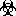

ReStructuredText 初探¶
- Author
Richard Jones
- Version
$Revision$
- Copyright
This document has been placed in the public domain.
下面的文本包含看起来像 “(quickref)” 的链接。这些是相对链接，指向 Quick reStructuredText 用户参考。如果这些链接不起作用，请参考 master quick reference 文档。
注解
本文档是对 reStructuredText 的非正式介绍。下面的 下一步是什么？ 部分有更多资源的链接，包括正式的参考资料。
结构化¶
从一开始，让我说，”结构化文本” 可能是一个有点错误的名称。它更像是使用某些一致模式的 “放松文本”。这些模式被 HTML 转换器解释为产生可以被网络浏览器使用的 “非常结构化的文本”。
公认的最基本模式是 段落 （quickref）。这是一大块由空行（一个就够了）分隔的文本。段落必须有相同的缩进 – 也就是说，在其左边缘排列。开始缩进的段落将导致缩进的引用段落。例如
This is a paragraph. It's quite
short.
This paragraph will result in an indented block of
text, typically used for quoting other text.
This is another one.
结果是：
This is a paragraph. It’s quite short.
This paragraph will result in an indented block of text, typically used for quoting other text.
This is another one.
文本样式¶
（quickref ）
在段落和其他正文中，你可以另外用 “*italics*” 标记 italics，或用 “**bold**” 标记 bold。这被称为 “内联标记”（”inline markup”）。
如果你想让某些东西作为固定空间的文字出现，使用 “``double back-quotes``”。请注意，在双反引号内不会做进一步的处理 – 所以星号 “*” 等就不用管了。
如果你发现你想在文本中使用其中一个 “特殊” 字符，一般来说是可以的 – reStructuredText 是相当聪明的。例如，这个孤独的星号 * 被处理得很好，这个方程式 5*6=30 中的星号也是如此。如果你想让被星号包围的文本不被斜体化，那么你需要说明星号并不特别。你可以通过在它前面放一个反斜杠来做到这一点，就像这样 “\*” （quickref），或者用双反引号把它括起来（内联字），像这样
``*``
小技巧
把内联标记看作是（括号）的一种形式，并以同样的方式使用它：紧接在被标记的文本之前和之后。内联标记本身（由空格包围）或在一个词的中间，不会被识别。完整的细节请参考 标记规范。
列表¶
项的列表有三种主要类型。有序的 （enumerated），无序的 （bulleted）和 定义的。在所有列表的情况下，你可以有任意多的段落、子列表等，只要段落或其他东西的左侧与列表项的第一行文本对齐即可。
列表必须总是从一个新的段落开始 – 也就是说，它们必须出现在一个空行之后。
- 有序 列表（数字、字母或罗马数字；quickref）。
用数字或字母开始一行，后面是句号 “.”，右括号 “)” 或用括号 “( )” 包围。– 无论你喜欢什么。以下所有的形式都被认可
1. numbers A. upper-case letters and it goes over many lines with two paragraphs and all! a. lower-case letters 3. with a sub-list starting at a different number 4. make sure the numbers are in the correct sequence though! I. upper-case roman numerals i. lower-case roman numerals (1) numbers again 1) and again
结果在（注意：不同的枚举式列表样式并不总是被每个网络浏览器所支持，所以你在这里可能无法获得完整的效果）：
numbers
upper-case letters and it goes over many lines
with two paragraphs and all!
lower-case letters
with a sub-list starting at a different number
make sure the numbers are in the correct sequence though!
upper-case roman numerals
lower-case roman numerals
numbers again
and again
- 无序 列表 （quickref）
就像有序列表一样，用一个圆点字符开始一行 – 要么是 “-”、 “+” 或 “*”
* a bullet point using "*" - a sub-list using "-" + yet another sub-list - another item
结果是：
a bullet point using “*”
a sub-list using “-”
yet another sub-list
another item
- 定义 列表 （quickref）
与其他两个不同，定义列表由一个术语和该术语的定义组成。定义列表的格式是
what Definition lists associate a term with a definition. *how* The term is a one-line phrase, and the definition is one or more paragraphs or body elements, indented relative to the term. Blank lines are not allowed between term and definition.
结果是：
- what
Definition lists associate a term with a definition.
- how
The term is a one-line phrase, and the definition is one or more paragraphs or body elements, indented relative to the term. Blank lines are not allowed between term and definition.
预设格式化（代码样本）¶
（quickref ）
要想只包含一大块预设格式的、永远不会被悬挂的文本，就用 “::” 来结束前面的段落。当文本回落到与预格式化块之前的段落相同的缩进水平时，预格式化块就完成了。例如
An example::
Whitespace, newlines, blank lines, and all kinds of markup
(like *this* or \this) is preserved by literal blocks.
Lookie here, I've dropped an indentation level
(but not far enough)
no more example
结果是：
An example:
Whitespace, newlines, blank lines, and all kinds of markup (like *this* or \this) is preserved by literal blocks. Lookie here, I've dropped an indentation level (but not far enough)no more example
注意，如果一个段落只由 “::” 组成，那么它就会从输出中删除
::
This is preformatted text, and the
last "::" paragraph is removed
结果是：
This is preformatted text, and the
last "::" paragraph is removed
章节¶
（quickref ）
要把较长的文本分成几个章节，你可以使用 章节标题。这些是带有装饰的单行文本（一个或多个单词）：单独的下划线，或下划线和上划线一起，用破折号 “-----”，等号 “======”，波浪线 “~~~~~~” 或任何你觉得合适的非字母数字字符 = - ` : ' " ~ ^ _ * + # < >。仅有下划线的装饰与使用相同字符的上划线和下划线的装饰不同。下划线/上划线必须至少与标题文本一样长。要保持一致，因为所有标有相同装饰风格的部分都被视为处于同一水平
Chapter 1 Title
===============
Section 1.1 Title
-----------------
Subsection 1.1.1 Title
~~~~~~~~~~~~~~~~~~~~~~
Section 1.2 Title
-----------------
Chapter 2 Title
===============
这导致了以下结构，用简化的伪 XML 来说明
<section>
<title>
Chapter 1 Title
<section>
<title>
Section 1.1 Title
<section>
<title>
Subsection 1.1.1 Title
<section>
<title>
Section 1.2 Title
<section>
<title>
Chapter 2 Title
（伪 XML 使用缩进进行嵌套，没有结束标记。不可能像其他例子那样显示实际处理过的输出，因为部分不能存在于块状引号内。对于一个具体的例子，请比较本文档的源文本和处理后的输出的章节结构。）
请注意，章节标题可以作为链接目标，只需使用其名称即可。要链接到 Lists 标题，我就写 “Lists_”。如果标题中有一个空格，如 text styles，我们需要引用标题 “`text styles`_”。
文档标题/副标题¶
整个文档的标题（title）有别于章节标题，其格式可能有些不同（例如，HTML 编写者默认将其显示为居中的标题）。
为了在 reStructuredText 中表示文档的标题，在文档的开头使用一种独特的装饰风格。要表示文档的副标题，请在文档标题之后立即使用另一种独特的装饰风格。例如
================
Document Title
================
----------
Subtitle
----------
Section Title
=============
...
注意，上面的 “Document Title” 和 “Section Title” 都使用了等号，但却是不同的、不相关的样式。为美观起见，可以将加粗线和下划线的标题（但不能只用下划线）嵌入其中。
图片¶
（quickref ）
要在你的文档中包含图片，你可以使用 image 指令。例如
.. image:: images/biohazard.png
结果是：
images/biohazard.png 部分表示你希望出现在文件中的图片的文件名。对图像没有任何限制（格式、大小等）。如果该图像将出现在 HTML 中，并且你希望提供额外的信息，你可以
.. image:: images/biohazard.png
:height: 100
:width: 200
:scale: 50
:alt: alternate text
更多信息请参见完整的 image 指令文档。
下一步是什么？¶
这篇入门读物介绍了 reStructuredText 最常见的功能，但还有很多东西需要探索。Quick reStructuredText 用户参考是一个好地方。对于完整的细节，reStructuredText 标记规范 是一个好地方 1。
对 Docutils 或 reStructuredText 有疑问或需要帮助的用户应在 Docutils-users 邮件列表中发布信息。
- 1
如果这个相对链接不起作用，试试主文档：http://docutils.sourceforge.net/docs/ref/rst/restructuredtext.html.